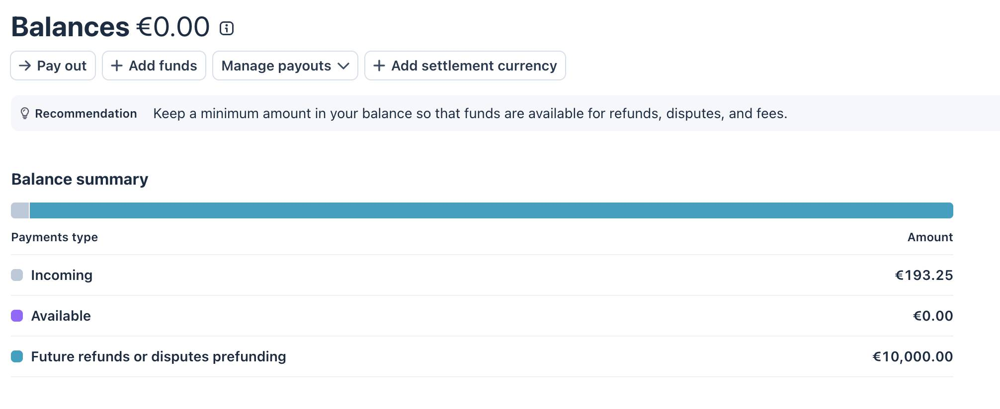
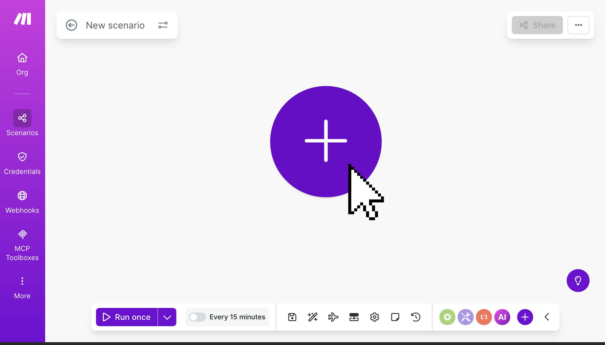
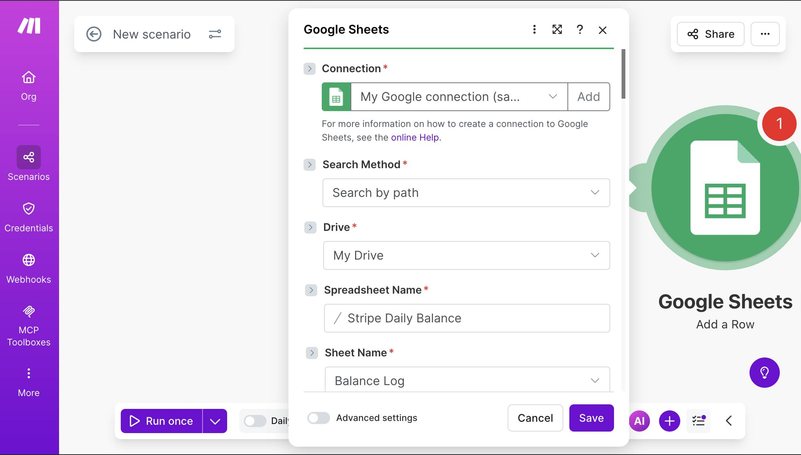
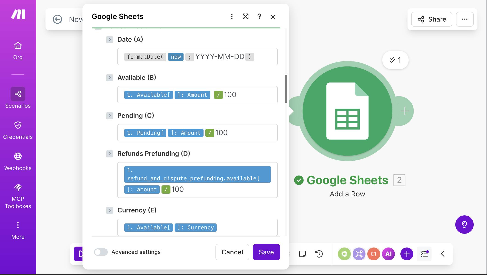
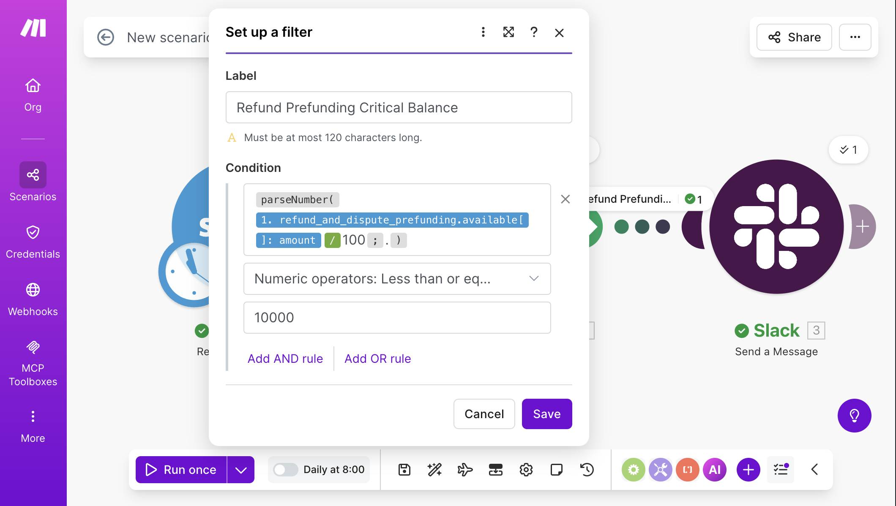
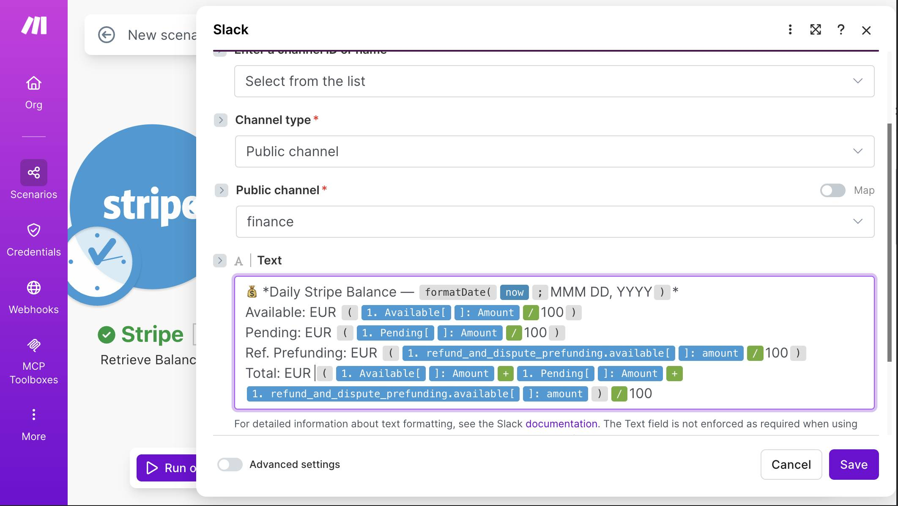
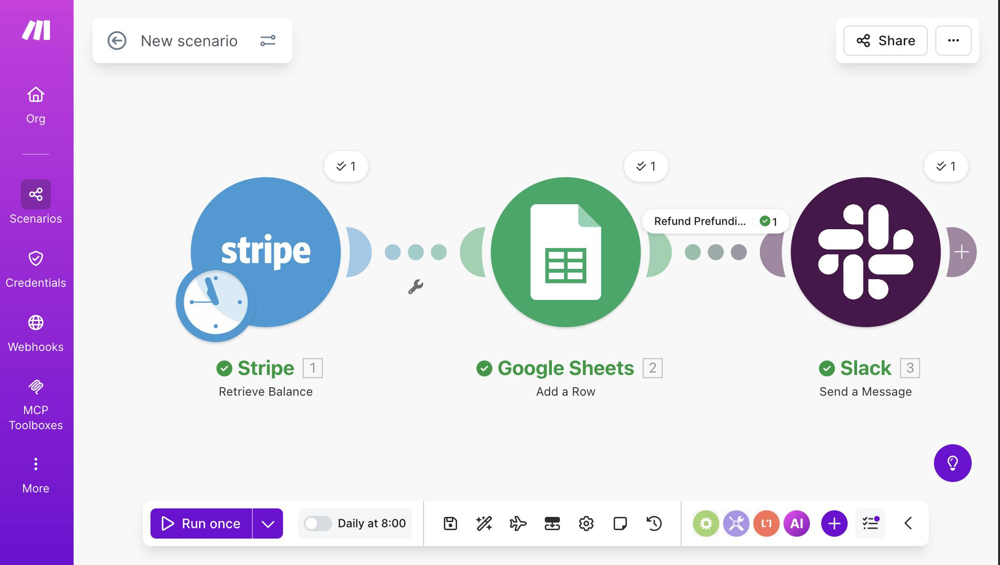
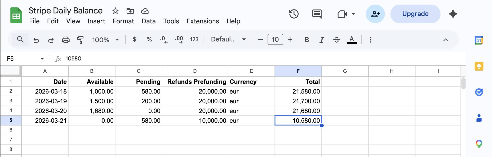
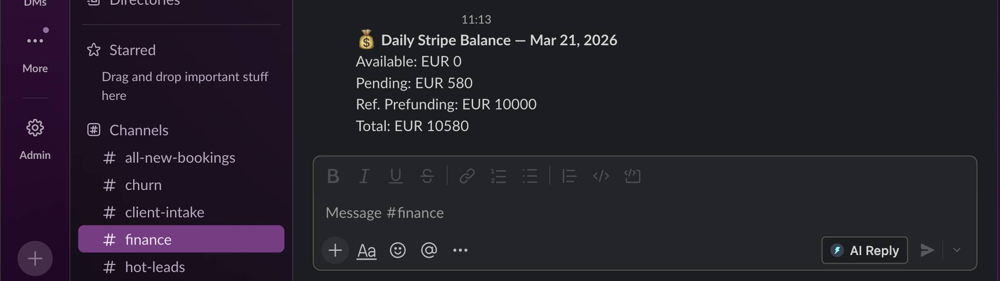
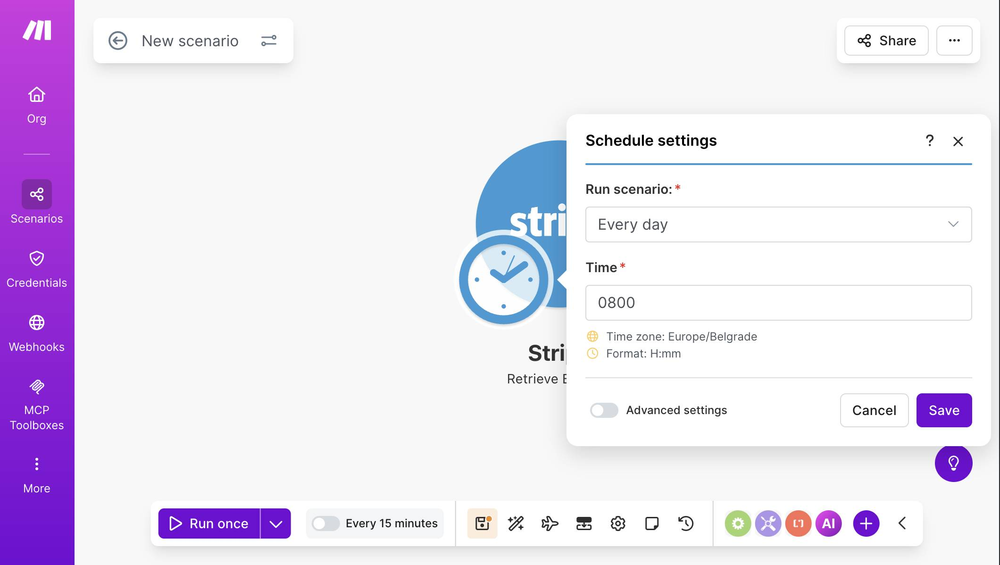

Stripe Daily Balance Tracker: Google Sheets + Slack (Make.com)
You log into Stripe to check your balance. Available is zero — again — because yesterday's payments haven't settled yet. Pending looks healthy, but you're not sure how much is actually yours to withdraw. You check the balance summary, do some mental math, close the tab, and forget to check again until next week. If your account uses refund and dispute prefunding, that reserve balance might have quietly dropped below a comfortable level — and you wouldn't know until Stripe pulls funds from your bank to cover a chargeback. This Make.com automation removes the guesswork. Every morning, it pulls your Stripe balance — available funds, pending settlements, and refund reserve (if enabled) — logs the snapshot to Google Sheets, and pings Slack when something needs attention. Three modules, one filter, 20 minutes to build.
Why a Daily Balance Snapshot Matters
Stripe's dashboard shows your current balance, but it doesn't show yesterday's balance, or last Tuesday's, or the day your biggest client's payment settled. There's no built-in trend view that answers "is my available balance growing or shrinking week over week?" For freelancers and small agencies handling a handful of transactions, this is manageable — you check when you remember. For businesses processing daily payments, especially with recurring subscriptions, the balance moves constantly. Pending funds settle, refunds get deducted, disputes hold funds, and payouts clear. Without a daily log, you're looking at a single snapshot that tells you nothing about direction. The Google Sheets log this automation builds gives you a running financial record you can filter, chart, and share with a bookkeeper — without giving them access to your Stripe account.
How the Stripe Balance Automation Works
Make.com runs this scenario once per day on a schedule you set. It calls the Stripe Balance API, writes the numbers to a new row in Google Sheets, and checks whether your refund and dispute prefunding reserve has dropped to a critical level. If it has, Slack gets an alert. If the reserve is healthy, the day's balance is logged silently.
Automation Flow
| Step | What Happens | Tool |
|---|---|---|
| 1 | Scenario runs on daily schedule (e.g., 8:00 AM) | Make.com Scheduler |
| 2 | Retrieve current Stripe balance | Stripe API |
| 3 | Log balance snapshot to spreadsheet | Google Sheets |
| 4 | Check if refund reserve is at or below threshold | Filter |
| 5 | Alert team in Slack if reserve is critical | Slack |
This is the first scenario in this series that uses a scheduled trigger instead of a webhook. Every previous automation fired instantly when an event happened — a form submission, a failed payment, a new customer. This one runs on a clock, which changes how credits work and when the scenario executes. More on that in the credits section.
Build this daily balance tracker on Make.com's free plan — no credit card required. Start free on Make.com →
Available vs. Pending vs. Refund Prefunding — What Stripe Balances Actually Mean
Before building the automation, you need to understand what Stripe returns when you ask for the current balance. There are three numbers that matter.
Available Balance
This is money you can withdraw to your bank account right now. When Stripe processes a payment, it deducts its processing fee and holds the rest. After the settlement period — usually 2 business days in Europe, sometimes longer depending on your country and payment method — those funds move from pending to available. If your available balance is €0 and your pending balance shows €1,500, that just means recent payments haven't settled yet. Nothing is wrong.
Pending Balance
Funds from payments that have been processed but haven't finished settling. A customer pays €500 on Monday. Stripe deducts its fee, and the remainder sits in pending until Wednesday (T+2). On Wednesday morning, it moves to available. Pending is not "money at risk" — it's money in transit between the payment processor and your balance.
Refund and Dispute Prefunding
This is the balance most people overlook — and the one this automation specifically monitors. Stripe recommends keeping a reserve of funds to cover future refunds and chargebacks. If a customer disputes a charge or you issue a refund, Stripe deducts the amount from your available balance. If your available balance is empty, Stripe pulls the funds from your bank account directly. Prefunding means you've proactively added money to a dedicated Stripe reserve so that refunds and disputes are covered without surprise bank withdrawals. When this reserve drops below a comfortable threshold, you want to know about it — that's what the Slack alert in this automation does.

What You Need Before Starting
Three things to set up before opening Make.com: a Stripe account (live or test mode), a Google Sheet for the balance log, and a Slack channel for alerts.
Stripe Account
If you're testing, switch to Test mode in your Stripe dashboard. Create a few test payments using test card number 4242 4242 4242 4242 (any future expiry, any CVC) to populate a balance. In test mode, payments typically settle into your available balance immediately — you won't need to wait for real settlement timing. Have your Stripe API key ready (Settings → API keys → Secret key).
Google Sheets — Balance Log
Create a spreadsheet called "Stripe Daily Balance" with a sheet named "Balance Log." Add six column headers in row 1: Date (A), Available (B), Pending (C), Refunds Prefunding (D), Currency (E), Total (F). The automation fills one row per day.
Slack Channel
Pick or create a channel for financial alerts — this guide uses #finance. The automation only posts here when your refund prefunding balance drops to a critical level, so the channel stays quiet on normal days.
How to Build the Daily Stripe Balance Automation
- Log in to Make.com and create a new scenario. Click the large + button on the empty canvas.

Make.com — new empty scenario with the + button to add your first module - Search for "Stripe" and select the Retrieve a Balance module. This is an action module, not a trigger — it fetches your current balance on demand whenever the scenario runs. Connect your Stripe account by entering your API key when prompted. There are no additional settings to configure — this module simply calls the Stripe Balance API and returns the current state of all your balances.
- Click "Run once" to test. The module should return a green checkmark with your balance data. You'll see available, pending, and (if enabled) refund_and_dispute_prefunding fields, each with an amount in cents and a currency code. The amount values are integers — 100000 means €1,000.00. You'll divide by 100 when mapping to Google Sheets.
- Add Google Sheets — Add a Row. Click the + button after the Stripe module and search for "Google Sheets." Select Add a Row. Connect your Google account, then select your "Stripe Daily Balance" spreadsheet and "Balance Log" sheet.

Google Sheets module — connection, Stripe Daily Balance spreadsheet, and Balance Log sheet selected - Map each column to the Stripe balance data. Date (A): use the formula formatDate( now ; YYYY-MM-DD ) to log today's date in a sortable format. Available (B): map 1. Available[]: Amount and divide by 100 to convert cents to euros. Pending (C): map 1. Pending[]: Amount / 100. Refunds Prefunding (D): map 1. refund_and_dispute_prefunding.available[]: amount / 100. Currency (E): map 1. Available[]: Currency. For Total (F), add all three balance components and divide by 100: ( Available amount + Pending amount + refund_and_dispute_prefunding amount ) / 100. Note: this total represents your combined Stripe balance across all states — not the amount you can withdraw today (that's just Available). It's useful for tracking your overall Stripe position over time. Also note: this mapping uses the first element in each balance array, which works for single-currency accounts. If you accept payments in multiple currencies, each currency gets a separate array entry — see the FAQ for how to handle that.

Google Sheets mapping — Date with formatDate formula, Available and Pending with /100 conversion, Refunds Prefunding from refund_and_dispute_prefunding, and Currency field - 💡 Pro Tip: Stripe returns all amounts in the smallest currency unit — cents for EUR and USD, pence for GBP. A balance of 1000000 is €10,000.00, not €1,000,000. Dividing by 100 converts to the standard currency format. If you forget this step, your spreadsheet will show numbers 100x too large and your Slack alerts will trigger on the wrong threshold. Once your first row lands in Google Sheets, select columns B, C, D, and F and format them as Currency (Format → Number → Currency). Make.com writes plain numbers — Sheets formatting makes the log much easier to read at a glance, especially if you're sharing it with a bookkeeper.
- Add a filter between Google Sheets and Slack. Click the dotted connection line after the Google Sheets module (or click + and you'll see the option to add a filter on the link). Name the filter "Refund Prefunding Critical Balance." Set the condition to check whether the refund prefunding balance has dropped to or below your threshold. The condition uses parseNumber( refund_and_dispute_prefunding.available[]: amount / 100 ; . ) — Numeric operators: Less than or equal to — 10000. This means Slack only fires when the refund reserve is at or below €10,000.

Filter setup — parseNumber wrapping the refund prefunding amount divided by 100, Less than or equal to 10000 - 💡 Pro Tip: Why parseNumber? When you divide the Stripe amount by 100, Make.com sometimes treats the result as a string rather than a number. The numeric comparison operator then fails silently — it won't match even when the value clearly meets the threshold. Wrapping the formula in parseNumber() forces Make.com to evaluate it as a number. The second parameter (the period after the semicolon) tells parseNumber to use a dot as the decimal separator. This is a common gotcha in Make.com filters — if your numeric filter seems to never trigger, check whether the value needs a parseNumber wrapper.
- Add Slack — Send a Message. Click + after the filter and search for "Slack." Select Send a Message (or Create a Message). Connect your Slack workspace, set Channel type to "Public channel," and select your #finance channel. In the Text field, build a formatted message that includes the date, all three balance values, and the total. Use Slack's markdown: bold the title with asterisks and put each balance on its own line.

Slack module — Public channel, #finance selected, message text with Daily Stripe Balance header, Available, Pending, Ref. Prefunding, and Total values mapped from Stripe with /100 conversion - Run the complete scenario to test. Click "Run once." The Stripe module fetches your balance, Google Sheets gets a new row, and if your refund prefunding is at or below the threshold, Slack receives the alert. Check all three: the Stripe module should show a green checkmark, your spreadsheet should have a new row, and your Slack channel should show the formatted balance message (assuming your current prefunding balance meets the filter condition).

Complete scenario — Stripe Retrieve Balance, Google Sheets Add a Row, and Slack Send a Message connected with "Refund Prefundi..." filter label visible, all green checkmarks, "Daily at 8:00" scheduling shown 
Google Sheets Balance Log — four days of data showing Available, Pending, Refunds Prefunding, Currency, and Total columns with the refund reserve dropping from €20,000 to €10,000 
Slack #finance channel — Daily Stripe Balance alert showing Available EUR 0, Pending EUR 580, Ref. Prefunding EUR 10000, Total EUR 10580 - Set up the daily schedule. Click the clock icon at the bottom of the scenario canvas (next to "Run once"). Set Run scenario to "Every day" and Time to 0800 (or whenever you want the morning snapshot). The timezone defaults to your account setting — in this example, Europe/Belgrade. Click Save.

Schedule settings panel — Run scenario set to "Every day", Time set to 0800, timezone Europe/Belgrade - 💡 Pro Tip: This is a scheduled scenario, not a webhook-triggered one. Every other Stripe automation in this series (failed payments, new customers, cancellations) uses an INSTANT webhook trigger that fires the moment an event occurs. This scenario runs on a clock — once per day at the time you set. That distinction matters for credits: webhook triggers consume 0 credits while idle (they only cost when an event arrives), while a scheduled run always consumes credits when it fires, regardless of whether anything changed. For a once-daily scenario, the cost is minimal — but it's worth understanding the difference if you're managing your free plan credits tightly.
- Toggle the scenario ON. Flip the switch next to "Daily at 8:00" at the bottom of the canvas to activate the schedule. From tomorrow morning, you'll get a new row in your spreadsheet every day and a Slack alert whenever the refund reserve needs attention.
Credits and Cost Breakdown
This scenario runs once per day. Here's the exact cost per run:
Make.com Credits per Daily Run
| Module | Credits | Notes |
|---|---|---|
| Stripe Retrieve a Balance | 1 | Fetches current balance |
| Google Sheets Add a Row | 1 | Logs the daily snapshot |
| Slack Send a Message | 0 or 1 | 1 credit only when filter passes (reserve at/below threshold) |
| Total per run | 2-3 | 2 on normal days, 3 when Slack alert fires |
At one run per day: 2 credits × 30 days = 60 credits per month on quiet months, or up to 90 credits if Slack fires every day. The free plan includes 1,000 credits per month — this automation uses roughly 6-9% of your allowance, leaving plenty of room for other scenarios.
Unlike webhook-triggered automations that consume zero credits while idle, scheduled scenarios always run at their set time. If your Stripe balance doesn't change over the weekend but the scenario is set to daily, it still runs and logs the (unchanged) data. You can optionally restrict runs to weekdays through Advanced scheduling settings — but for most users, daily logging is more useful than trying to optimize away 4-6 credits per month.
What Could Go Wrong (and How to Handle It)
The most likely issue is the Stripe module returning an authentication error. This means your API key is invalid, expired, or using the wrong mode. If you built the scenario in test mode and later switch to live, you need to update the Stripe connection with your live API key — test and live keys are separate.
Second: the Google Sheets module fails with a "spreadsheet not found" error after you rename or move the file. Make.com references spreadsheets by internal ID, not by name, so renaming is fine — but moving the file to a different Google Drive location or deleting and recreating it breaks the link. Reselect the spreadsheet in the module settings if this happens.
Third: the Slack filter never triggers even though your refund prefunding is below the threshold. This is usually the parseNumber issue described in step 6 — the divided value is being treated as a string. Open the filter, verify the parseNumber wrapper is in place, and check that the decimal separator parameter (the dot after the semicolon) matches your account's locale settings.
Fourth: the Refunds Prefunding column is always empty. This means your Stripe account doesn't have refund prefunding enabled. The Balance API only returns this field when the feature is active. The automation still works — Google Sheets logs Available, Pending, Currency, and Total correctly. You can repurpose the filter to monitor available balance instead (e.g., alert when available drops below €500).
Frequently Asked Questions
Does this work in Stripe test mode?
Yes. The Retrieve a Balance module works identically in test and live mode — it returns whatever balance exists in the mode your API key corresponds to. In test mode, payments typically settle into your available balance immediately, so you can validate the entire flow without waiting for real settlement timing. Switch to your live API key when you're ready to track real balances.
Can I run this more than once per day?
Yes. Change the schedule from "Every day" to a shorter interval — for example, every 6 hours or every hour. Keep in mind that each run consumes 2-3 credits. Running every hour would use 1,440-2,160 credits per month, which exceeds the free plan's 1,000 credit limit. For hourly monitoring, you'd need the Core plan ($10.59/month, annual billing) which provides 10,000 credits.
What if I receive payments in multiple currencies?
The Stripe Balance API returns separate entries for each currency in the available and pending arrays. This automation maps the first array element — which works perfectly for single-currency accounts. If you accept payments in both EUR and USD, you'd need to add an Iterator module to loop through each currency entry and log separate rows, or add additional columns for each currency. Most small businesses operate in a single currency, so the basic setup covers the majority of cases.
Can I use this alongside my other Stripe automations?
Yes. This scenario runs independently on a schedule — it doesn't interfere with webhook-triggered automations like the failed payment alerts or cancellation tracker. They use different trigger types and can share the same Stripe connection. Each scenario counts separately toward your active scenario limit (2 on the free plan).
Why not use Stripe's built-in reporting instead?
Stripe offers downloadable reports and a balance overview in the dashboard, but they require logging in. This automation pushes the data to you — a spreadsheet row every morning and a Slack alert when something needs attention. It also builds a historical log that Stripe's dashboard doesn't easily provide. For bookkeeping, tax preparation, or sharing financial snapshots with a partner, a structured spreadsheet is far more practical than dashboard screenshots.